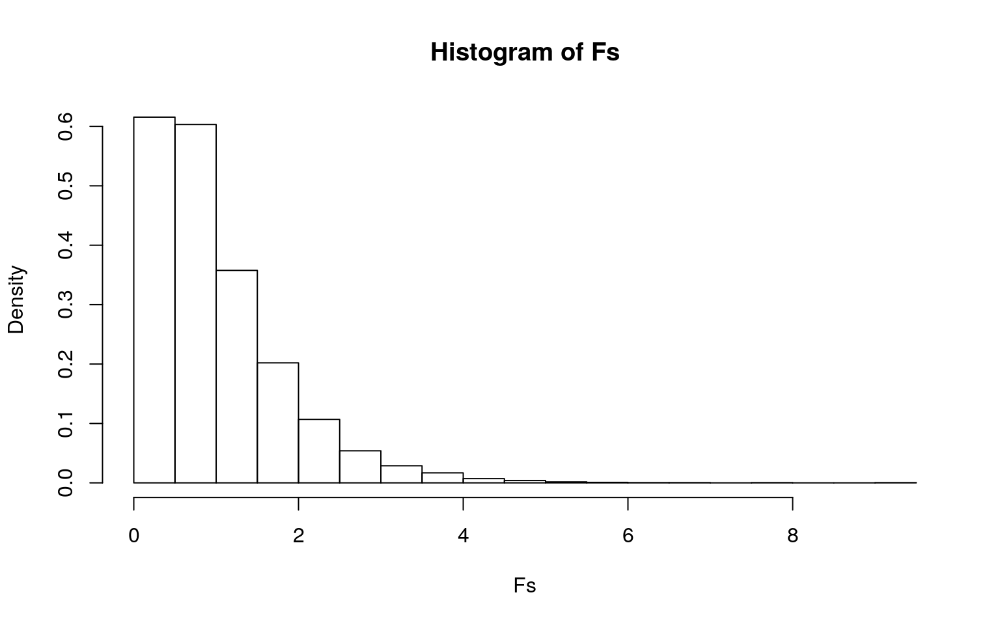
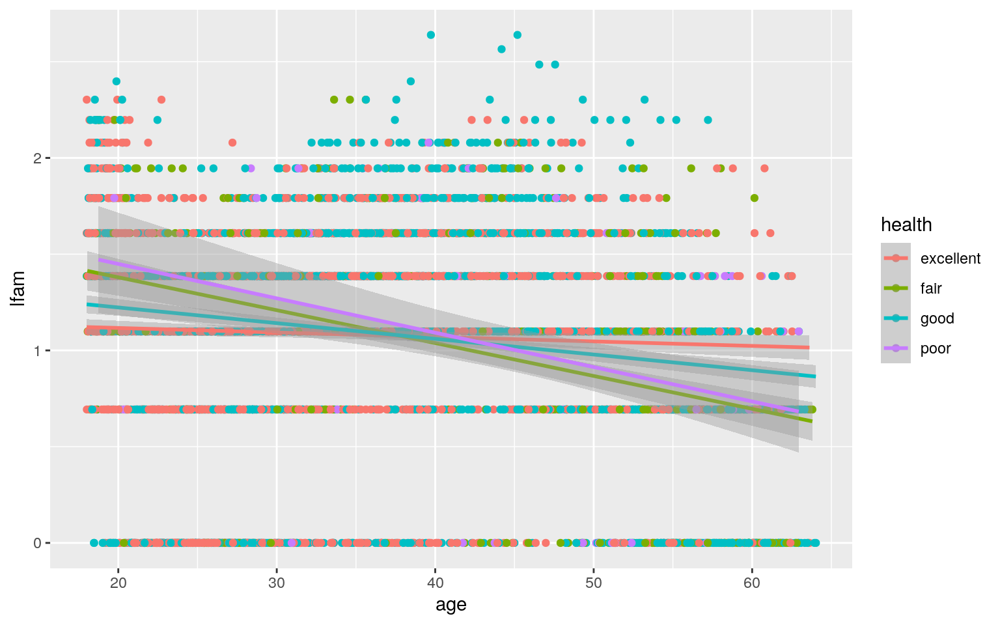
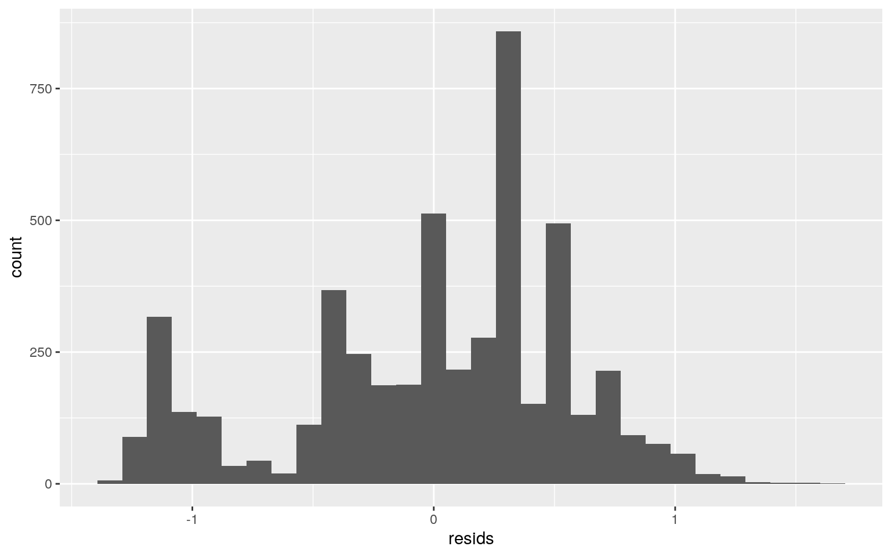
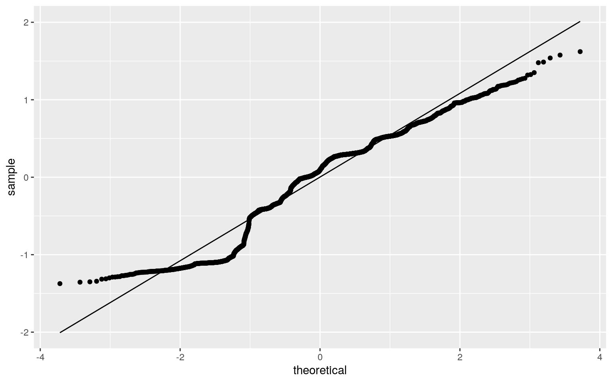
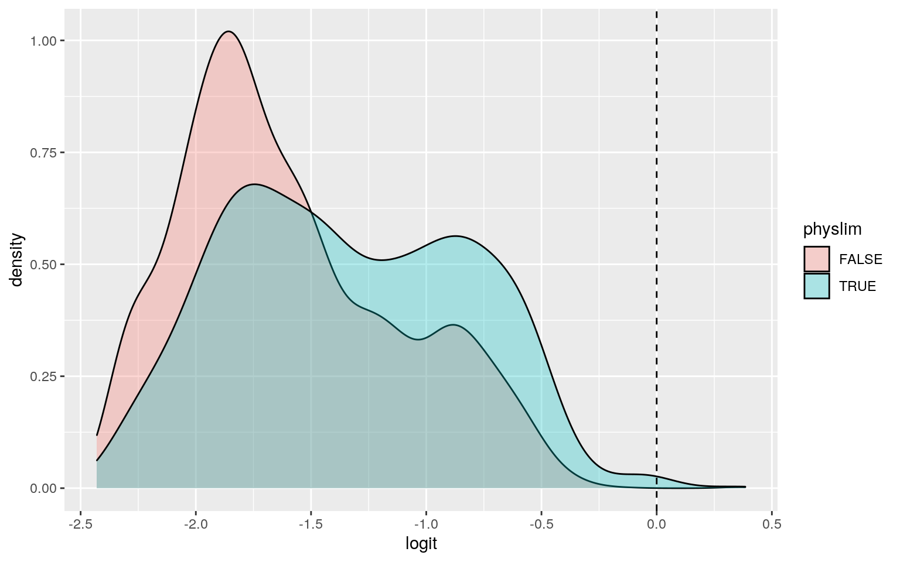
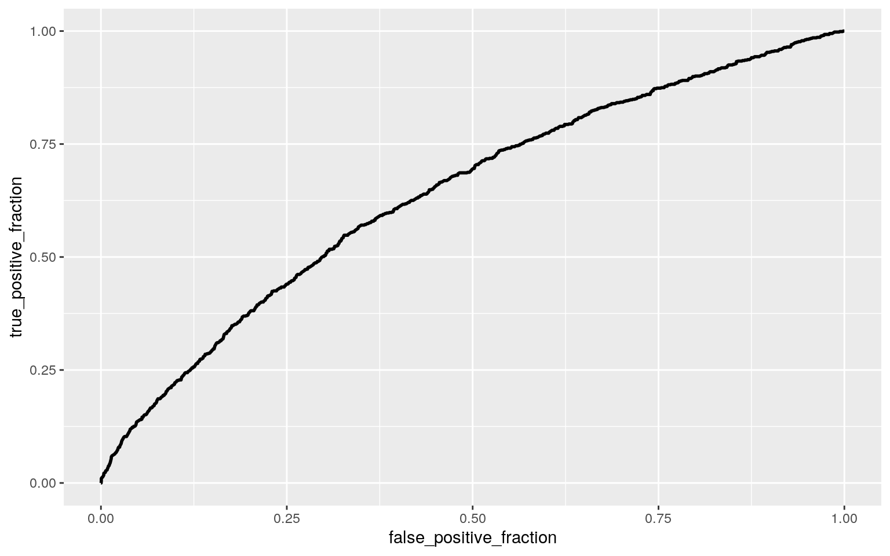

In this project, we will explore will explore patient interactions with medial doctors!
library(tidyverse)
library(tidyr)
library(dplyr)
library(ggplot2)
library(scales)
library(viridis)
library(cluster)
library(plotly)
library(GGally)
library(lmtest)
library(sandwich)
library(plotROC)
library(readr)
library(pROC)
library(glmnet)The dataset that I chose was from a cross-section from 1977–1978 of contacts with a medical doctor. It presents 20,186 observations from people who have had encounters with a medical doctor. This dataset includes variables: log of annual participation incentive payment (lpi); whether or not the patients have a physical limitation (physlim); number of chronic diseases (ndisease); self–rate health including: excellent,good,fair, and poor (health); log of annual family income in dollars (linc); log of family size (lfam); age in years (age); and sex (sex).
I decided to take out variables like wheter or not they were under 18 because I actually narrowed down the dataset to only include patients over the age of 18. I also chose a random sample of 5,000 patients to proceed with the rest of the analysis. In total there are 11 variables recorded for 5,000 patients.
doctor <- read.csv("~/DoctorContacts.csv")
# Cleaning up and getting desired vairables
doctor[1:3] <- NULL
doctor[1] <- NULL
doctor[2] <- NULL
doctor[11] <- NULL
doctor[10] <- NULL
head(doctor)## lpi physlim ndisease health linc lfam educdec age sex
## 1 6.907755 FALSE 13.73189 good 9.528776 1.386294 12 42.87748 male
## 2 6.907755 FALSE 13.73189 good 9.528776 1.386294 12 43.87748 male
## 3 6.907755 FALSE 13.73189 good 9.528776 1.386294 12 44.87748 male
## 4 6.907755 FALSE 13.73189 good 9.528776 1.386294 12 45.87748 male
## 5 6.907755 FALSE 13.73189 good 9.528776 1.386294 12 46.87748 male
## 6 6.907755 FALSE 13.73189 excellent 9.528776 1.386294 12 16.59138 maleset.seed(1234)
doctor = filter(doctor, age > 18)
sample1 <- doctor %>% sample_n(5000)library(rstatix)
group <- sample1$health
DVs <- sample1 %>% select(age, ndisease, linc, lfam)
# Test multivariate normality for each group (null:
# assumption met) Some of my p-values were <.05, so I stopped
# here.
sapply(split(DVs, group), mshapiro_test)## excellent fair good poor
## statistic 0.6213629 0.7748604 0.6547862 0.8895214
## p.value 4.165886e-57 9.214794e-26 2.372129e-54 1.631927e-07# MANOVA
man1 <- manova(cbind(age, ndisease, linc, lfam) ~ health, data = sample1)
summary(man1)## Df Pillai approx F num Df den Df Pr(>F)
## health 3 0.15229 66.782 12 14985 < 2.2e-16 ***
## Residuals 4996
## ---
## Signif. codes: 0 '***' 0.001 '**' 0.01 '*' 0.05 '.' 0.1 ' ' 1# Univariate ANOVAs
summary.aov(man1)## Response age :
## Df Sum Sq Mean Sq F value Pr(>F)
## health 3 30593 10197.6 71.562 < 2.2e-16 ***
## Residuals 4996 711928 142.5
## ---
## Signif. codes: 0 '***' 0.001 '**' 0.01 '*' 0.05 '.' 0.1 ' ' 1
##
## Response ndisease :
## Df Sum Sq Mean Sq F value Pr(>F)
## health 3 31032 10344.1 160.71 < 2.2e-16 ***
## Residuals 4996 321570 64.4
## ---
## Signif. codes: 0 '***' 0.001 '**' 0.01 '*' 0.05 '.' 0.1 ' ' 1
##
## Response linc :
## Df Sum Sq Mean Sq F value Pr(>F)
## health 3 319.6 106.549 71.893 < 2.2e-16 ***
## Residuals 4996 7404.4 1.482
## ---
## Signif. codes: 0 '***' 0.001 '**' 0.01 '*' 0.05 '.' 0.1 ' ' 1
##
## Response lfam :
## Df Sum Sq Mean Sq F value Pr(>F)
## health 3 2.35 0.78387 2.3044 0.07485 .
## Residuals 4996 1699.46 0.34016
## ---
## Signif. codes: 0 '***' 0.001 '**' 0.01 '*' 0.05 '.' 0.1 ' ' 1pairwise.t.test(sample1$age, sample1$health, p.adj = "none")##
## Pairwise comparisons using t tests with pooled SD
##
## data: sample1$age and sample1$health
##
## excellent fair good
## fair < 2e-16 - -
## good < 2e-16 7.8e-10 -
## poor < 2e-16 0.0071 1.9e-09
##
## P value adjustment method: nonepairwise.t.test(sample1$ndisease, sample1$health, p.adj = "none")##
## Pairwise comparisons using t tests with pooled SD
##
## data: sample1$ndisease and sample1$health
##
## excellent fair good
## fair < 2e-16 - -
## good < 2e-16 < 2e-16 -
## poor < 2e-16 0.00084 7.4e-16
##
## P value adjustment method: nonepairwise.t.test(sample1$linc, sample1$health, p.adj = "none")##
## Pairwise comparisons using t tests with pooled SD
##
## data: sample1$linc and sample1$health
##
## excellent fair good
## fair < 2e-16 - -
## good 0.005 < 2e-16 -
## poor < 2e-16 3.3e-07 < 2e-16
##
## P value adjustment method: nonepairwise.t.test(sample1$lfam, sample1$health, p.adj = "none")##
## Pairwise comparisons using t tests with pooled SD
##
## data: sample1$lfam and sample1$health
##
## excellent fair good
## fair 0.021 - -
## good 0.853 0.030 -
## poor 0.197 0.904 0.219
##
## P value adjustment method: none# Did 1 MANOVA, 4 ANOVAs, 24 t-tests
0.05/29## [1] 0.001724138type1overall <- 1 - (1 - 0.05)^29
type1overall## [1] 0.7740645A one-way MANOVA was conducted to determine the effect of the patients health responses (excellent, good, fair, and poor) on 4 dependent variables (age, number of chronic illess, log of income, and log of family size).
Significant differences were found among the three health ratings for at least one of the dependent variables, Pillai trace = 0.15229, pseudo F (14,985) = 66.782 , p = 2.2e-16.
Univariate ANOVAs for each dependent variable were conducted as follow-up tests to the MANOVA, using the Bonferroni method for controlling Type I error rates for multiple comparisons. The univariate ANOVAs for age, number of chronic illess, and log of income were significant, F (3,4996) = 71.562, p = 2.2e-16, F (3,4996) = 160.71, p = 2.2e-16, and F (3,4996) = 71.893, p = 2.2e-16 respectively. The univariate ANOVA for log of family was not significant, F (3,4996) = 2.3044, p = 0.07485
Post hoc analysis was performed conducting pairwise comparisons to determine which Role differed in age, number of chronic illess, log of income, and log of family size. All four health states were found to differ significantly from each other in terms of sepal length and petal width after adjusting for multiple comparisons (bonferroni α = 0.05/29 = 0.001724138).
The assumptions of multivariate normal distribution was violated because values were less than 0.05 and therefore further testing was halted (homogeneity of vcov mats assumption were not met).
obs_F <- 71.893 #observed F statistic
Fs <- replicate(5000, {
new <- sample1 %>% mutate(linc = sample(linc))
SSW <- new %>% group_by(health) %>% summarize(SSW = sum((linc -
mean(linc))^2), .groups = "drop") %>% summarize(sum(SSW),
.groups = "drop") %>% pull
SSB <- new %>% mutate(mean = mean(linc)) %>% group_by(health) %>%
mutate(groupmean = mean(linc)) %>% summarize(SSB = sum((mean -
groupmean)^2), .groups = "drop") %>% summarize(sum(SSB),
.groups = "drop") %>% pull
(SSB/3)/(SSW/4996)
})
pf(71.893, df1 = 3, df2 = 4996, lower.tail = F)## [1] 1.623188e-45summary(aov(linc ~ health, data = sample1))## Df Sum Sq Mean Sq F value Pr(>F)
## health 3 320 106.55 71.89 <2e-16 ***
## Residuals 4996 7404 1.48
## ---
## Signif. codes: 0 '***' 0.001 '**' 0.01 '*' 0.05 '.' 0.1 ' ' 1# plot null distribution and observed F statistic
hist(Fs, prob = T)
abline(v = obs_F, col = "red", add = T)
mean(Fs > obs_F)## [1] 0I chose to run a permutation test as my randomization test. This test is able to determine whether the observed difference between the sample means is large enough. The null hypothesis is that all of the health responses have the same group mean for the 4 dependent variables (age, number of chronic illess, log of income, and log of family size). The alternative hypothesis is that all of the health responses do not have the same group mean for the 4 dependent variables (age, number of chronic illess, log of income, and log of family size).
We can reject the null hypothesis because none of the 5000 F-statistics generated under the null hypothsis were bigger than our actual F-statistic (71.893); therefore, the p-value is efectively 0.
doctor_fit <- lm(lfam ~ age * health, data = sample1)
summary(doctor_fit)##
## Call:
## lm(formula = lfam ~ age * health, data = sample1)
##
## Residuals:
## Min 1Q Median 3Q Max
## -1.37370 -0.36219 0.09307 0.36663 1.62120
##
## Coefficients:
## Estimate Std. Error t value Pr(>|t|)
## (Intercept) 1.163214 0.038815 29.968 < 2e-16 ***
## age -0.002329 0.001071 -2.174 0.02976 *
## healthfair 0.558124 0.091299 6.113 1.05e-09 ***
## healthgood 0.222962 0.055870 3.991 6.68e-05 ***
## healthpoor 0.643071 0.220460 2.917 0.00355 **
## age:healthfair -0.014754 0.002186 -6.748 1.67e-11 ***
## age:healthgood -0.005822 0.001477 -3.942 8.18e-05 ***
## age:healthpoor -0.015527 0.004827 -3.217 0.00130 **
## ---
## Signif. codes: 0 '***' 0.001 '**' 0.01 '*' 0.05 '.' 0.1 ' ' 1
##
## Residual standard error: 0.5741 on 4992 degrees of freedom
## Multiple R-squared: 0.0331, Adjusted R-squared: 0.03174
## F-statistic: 24.41 on 7 and 4992 DF, p-value: < 2.2e-16doctor_fit %>% ggplot(aes(age, lfam, color = health)) + geom_point() +
geom_smooth(method = "lm") The predicted value for family size for the reference group which in this case is people who claim they have excellent health but also in age of 0 is 1.163214 For every one year of age increase for people who rated themselves excellent health, the family decreases by 0.002329 Controlling for age, popele who have fair health have 0.558124 more family members than people with excellent health. Controlling for age, popele who have good health have 0.222962 more family members than people with excellent health. Controlling for age, popele who have poor health have 0.643071 more family members than people with excellent health. For every one year of age increase for people who rated themselves fair health, the family decreases by 0.014754. For every one year of age increase for people who rated themselves good health, the family decreases by 0.005822 For every one year of age increase for people who rated themselves poor health, the family decreases by 0.015527
# Assumptions
resids <- lm(lfam ~ age * health, data = sample1)$residuals
ggplot() + geom_histogram(aes(resids)) #normality
ggplot() + geom_qq(aes(sample = resids)) + geom_qq_line(aes(sample = resids)) #linearity
bptest(doctor_fit) #reject null which is that it is homoskedastic (p-value=2.2e-16) ##
## studentized Breusch-Pagan test
##
## data: doctor_fit
## BP = 30.268, df = 7, p-value = 8.48e-05Since the values are discrete and not continous all of my assumptions were not met (normality, linearit, and homoskedastic).
coeftest(doctor_fit)##
## t test of coefficients:
##
## Estimate Std. Error t value Pr(>|t|)
## (Intercept) 1.1632137 0.0388149 29.9682 < 2.2e-16 ***
## age -0.0023288 0.0010713 -2.1739 0.029759 *
## healthfair 0.5581238 0.0912985 6.1132 1.051e-09 ***
## healthgood 0.2229618 0.0558699 3.9907 6.681e-05 ***
## healthpoor 0.6430712 0.2204595 2.9170 0.003550 **
## age:healthfair -0.0147535 0.0021863 -6.7480 1.669e-11 ***
## age:healthgood -0.0058216 0.0014767 -3.9423 8.182e-05 ***
## age:healthpoor -0.0155274 0.0048271 -3.2167 0.001305 **
## ---
## Signif. codes: 0 '***' 0.001 '**' 0.01 '*' 0.05 '.' 0.1 ' ' 1coeftest(doctor_fit, vcov = vcovHC(doctor_fit))##
## t test of coefficients:
##
## Estimate Std. Error t value Pr(>|t|)
## (Intercept) 1.1632137 0.0400326 29.0566 < 2.2e-16 ***
## age -0.0023288 0.0010744 -2.1677 0.0302309 *
## healthfair 0.5581238 0.0921900 6.0541 1.516e-09 ***
## healthgood 0.2229618 0.0590440 3.7762 0.0001611 ***
## healthpoor 0.6430712 0.2315705 2.7770 0.0055068 **
## age:healthfair -0.0147535 0.0021754 -6.7818 1.324e-11 ***
## age:healthgood -0.0058216 0.0015250 -3.8173 0.0001365 ***
## age:healthpoor -0.0155274 0.0049041 -3.1662 0.0015538 **
## ---
## Signif. codes: 0 '***' 0.001 '**' 0.01 '*' 0.05 '.' 0.1 ' ' 1After recomputing with robust standard errors, there was an incease in the standard error values along with a decrease in p-values, thus meaning less variables were significant. The variables that were signifcant went down in the level of significance. These larger standard errors make it more difficult to reject the null and account for extra noise.
# Proportion of variance explained
pro_var = lm(lfam ~ age * health, data = sample1)
summary(pro_var)$adj.r.squared## [1] 0.03174383In order to find the proportion of variance explained by my model was found by using the adjusted r squared value. This value was 0.03174383
# Resampling Observations
samp_distn <- replicate(5000, {
boot_stats <- sample_frac(sample1, replace = T)
fit <- lm(lfam ~ age * health, data = boot_stats)
coef(fit)
})
samp_distn %>% t %>% as.data.frame %>% summarize_all(sd)## (Intercept) age healthfair healthgood healthpoor age:healthfair
## 1 0.0399928 0.001076126 0.0915813 0.05930103 0.2287532 0.002145611
## age:healthgood age:healthpoor
## 1 0.001539286 0.004849352The same regression model, the one with the interactions was ran. This time, the bootstrapped standard errors were computed. We can see that the standard error values are similar to those of the uncorrected standard errors in #3. But what is different due to the randomization of bootstrapping, the values fluctuate above and below the uncorrected standard errors. Also, the robust SE are all higher than bootstapped values which indicated that the p-values for the robust would also be higher. In concluciosn, bootstapping produces similar (not exact) standard errors, p-vaules, and consequently significance findings as the uncorrected regression but has values that are consistently lower than the values found using robust standard errors. Robust standard errors still have the lowest likelihood of producing a false positive.
# Logistic Regression
fit <- glm(physlim ~ linc + age, family = "binomial", data = sample1)
coeftest(fit)##
## z test of coefficients:
##
## Estimate Std. Error z value Pr(>|z|)
## (Intercept) -2.071651 0.251329 -8.2428 < 2.2e-16 ***
## linc -0.108503 0.026540 -4.0882 4.347e-05 ***
## age 0.040084 0.002974 13.4782 < 2.2e-16 ***
## ---
## Signif. codes: 0 '***' 0.001 '**' 0.01 '*' 0.05 '.' 0.1 ' ' 1exp(coef(fit))## (Intercept) linc age
## 0.1259776 0.8971760 1.0408985# Confusion Matrix
probs <- predict(fit, type = "response")
table(predict = as.numeric(probs > 0.5), truth = sample1$physlim) %>%
addmargins## truth
## predict FALSE TRUE Sum
## 0 4064 932 4996
## 1 2 2 4
## Sum 4066 934 5000The predictive odds of having a physical limitation for a person with 0 log income and 0 age is 0.1259776 (p-value=2.2e-16). Every one unit increase in log income multiplies the odds of having a physical limitation by 0.8971760 (p-value=4.347e-05). Every one unit increase in age multiplies the odds of having a physical limitatation by 1.0408985 (p-value=2.2e-16).
# Compute and discuss the Accuracy,(TPR), (TNR), (PPV), and
# AUC of model
class_diag(probs, sample1$physlim)## acc sens spec ppv f1 auc
## TRUE 0.8132 0.002141328 0.9995081 0.5 0.004264392 0.6412519My model preformed poorly as shown from an AUC value of 0.6412519 From the confusion matrix, we can determine that the accuracy is 0.8132, the sensitivity is 0.002141328, the specificity is 0.9995081, and the precision is 0.5. Based on the low accurcay, sensitivy, precision, and auc values, the total classification is pretty poor, the true positive rate and the positive predicted value are low, and the the model overall is a poor predictor. However, the high specificity means that the true negative rate is high.
# ggplot of density plot of log-odds
logit_fit <- glm(physlim ~ linc + age, data = sample1, family = binomial(link = "logit"))
sample1$logit <- predict(logit_fit)
ggplot(data = sample1, aes(logit, fill = physlim)) + geom_density(alpha = 0.3) +
geom_vline(xintercept = 0, lty = 2)
# generate a ROC curve
ROCplot <- ggplot(sample1) + geom_roc(aes(d = physlim, m = probs),
n.cuts = 0)
ROCplot
calc_auc(ROCplot)## PANEL group AUC
## 1 1 -1 0.6412764Ideally, a ROC plot resembles a sharp right angle; however, my ROC plot looks like a slight curve, thus, reflecting the low auc value of 0.6412764 and the poor predictivity of the model.
# Logistic regression
fit <- glm(physlim ~ ., family = "binomial", data = sample1)
summary(fit)##
## Call:
## glm(formula = physlim ~ ., family = "binomial", data = sample1)
##
## Deviance Residuals:
## Min 1Q Median 3Q Max
## -2.2638 -0.6150 -0.4468 -0.3150 2.6054
##
## Coefficients: (1 not defined because of singularities)
## Estimate Std. Error z value Pr(>|z|)
## (Intercept) -3.336761 0.343419 -9.716 < 2e-16 ***
## lpi -0.051020 0.014840 -3.438 0.000586 ***
## ndisease 0.072660 0.005055 14.373 < 2e-16 ***
## healthfair 1.262189 0.128255 9.841 < 2e-16 ***
## healthgood 0.360488 0.093718 3.847 0.000120 ***
## healthpoor 2.127915 0.239000 8.903 < 2e-16 ***
## linc -0.009546 0.033418 -0.286 0.775149
## lfam 0.149189 0.072274 2.064 0.038998 *
## educdec -0.005858 0.014081 -0.416 0.677419
## age 0.020559 0.003534 5.818 5.96e-09 ***
## sexmale -0.209041 0.084909 -2.462 0.013819 *
## logit NA NA NA NA
## ---
## Signif. codes: 0 '***' 0.001 '**' 0.01 '*' 0.05 '.' 0.1 ' ' 1
##
## (Dispersion parameter for binomial family taken to be 1)
##
## Null deviance: 4815.5 on 4999 degrees of freedom
## Residual deviance: 4061.7 on 4989 degrees of freedom
## AIC: 4083.7
##
## Number of Fisher Scoring iterations: 5prob <- predict(fit, type = "response")
# Classification diagnostics
class_diag(prob, sample1$physlim)## acc sens spec ppv f1 auc
## TRUE 0.8386 0.2334047 0.9776193 0.7055016 0.3507643 0.7520284My model preformed poorly as shown from an AUC value of 0.7520284 From the confusion matrix, we can determine that the accuracy is 0.8386, the sensitivity is 0.2334047, the specificity is 0.9776193, and the precision is 0.7055016 Based on the low accurcay, sensitivy, precision, and auc values, the total classification is pretty poor, the true positive rate and the positive predicted value are low, and the the model overall is a poor predictor. However, the high specificity means that the true negative rate is high.
# 10-fold CV
set.seed(1234)
k = 10
data <- sample1[sample(nrow(sample1)), ]
folds <- cut(seq(1:nrow(sample1)), breaks = k, labels = F)
diags <- NULL
for (i in 1:k) {
train <- data[folds != i, ]
test <- data[folds == i, ]
truth <- test$physlim
fit <- glm(physlim ~ ., data = train, family = "binomial")
probs <- predict(fit, newdata = test, type = "response")
diags <- rbind(diags, class_diag(probs, truth))
}
summarize_all(diags, mean)## acc sens spec ppv f1 auc
## 1 0.8368 0.2243073 0.9778915 0.6968321 0.3366643 0.7495406My model preformed poorly as shown from an AUC value of 0.7495406 for 10-fold CV. From the confusion matrix, we can determine that the accuracy is 0.8368, the sensitivity is 0.2243073, the specificity is 0.9778915, and the precision is 0.6968321 Based on the low accurcay, sensitivy, precision, and auc values, the total classification is pretty poor, the true positive rate and the positive predicted value are low, and the the model overall is a poor predictor. However, the high specificity means that the true negative rate is high.
# LASSO
set.seed(1234)
y <- as.matrix(sample1$physlim)
x <- model.matrix(physlim ~ ., data = sample1)[, -1]
x <- scale(x)
cv <- cv.glmnet(x, y, family = "binomial")
lasso <- glmnet(x, y, family = "binomial", lambda = cv$lambda.1se)
coef(lasso)## 12 x 1 sparse Matrix of class "dgCMatrix"
## s0
## (Intercept) -1.58504604
## lpi .
## ndisease 0.50519006
## healthfair 0.18042170
## healthgood .
## healthpoor 0.13926737
## linc .
## lfam .
## educdec .
## age .
## sexmale .
## logit 0.09059888# Cross Validation
sample2 <- sample1 %>% mutate(fair = ifelse(health == "fair",
1, 0)) %>% mutate(poor = ifelse(health == "poor", 1, 0)) %>%
select(physlim, ndisease, fair, poor, educdec, logit)The variables that were retained after running the LASSO were number of diseases, fair (health), poor (health), years of education, and logit.
# 10 fold CV of variable lasso selected
set.seed(1234)
k = 10
data <- sample2[sample(nrow(sample2)), ]
folds <- cut(seq(1:nrow(sample2)), breaks = k, labels = F)
diags <- NULL
for (i in 1:k) {
train <- data[folds != i, ]
test <- data[folds == i, ]
truth <- test$physlim
fit <- glm(physlim ~ ndisease + fair + poor + educdec + logit,
data = sample2, family = "binomial")
probs <- predict(fit, newdata = test, type = "response")
diags <- rbind(diags, class_diag(probs, truth))
}
summarize_all(diags, mean)## acc sens spec ppv f1 auc
## 1 0.8364 0.2280644 0.976401 0.6854399 0.3403161 0.744532My model preformed poorly as shown from an AUC value of 0.744532 after preforming the LASSO and running the 10-fold CV. From the confusion matrix, we can determine that the accuracy is 0.8364 , the sensitivity is 0.2280644, the specificity is 0.976401, and the precision is 0.6854399 Based on the low accurcay, sensitivy, precision, and auc values, the total classification is pretty poor, the true positive rate and the positive predicted value are low, and the the model overall is a poor predictor. However, the high specificity means that the true negative rate is high. This LASSO AUC was a worse predictor than the 10-fold CV (no LASSO) because it has a lower AUC, accuracy, specificity, and precision. However the sensitivity was higher.
The End.